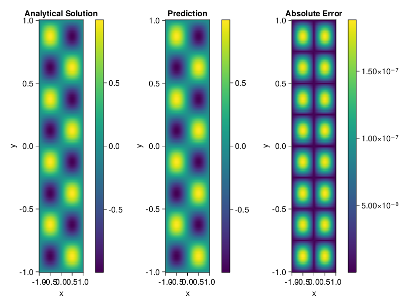

Helmholtz equation
Let us consider the Helmholtz equation in two space dimensions
\[\begin{aligned} &\Delta u(x, y)+k^{2} u(x, y)=q(x, y), \quad(x, y) \in \Omega:=(-1,1)^2 \\ &u(x, y)=0, \quad(x, y) \in \partial \Omega \end{aligned}\]
where
\[q(x, y)=-\left(a_{1} \pi\right)^{2} \sin \left(a_{1} \pi x\right) \sin \left(a_{2} \pi y\right)-\left(a_{2} \pi\right)^{2} \sin \left(a_{1} \pi x\right) \sin \left(a_{2} \pi y\right)+k^{2} \sin \left(a_{1} \pi x\right) \sin \left(a_{2} \pi y\right).\]
The excat solution is $u(x,y)=\sin{a_1\pi x}\sin{a_2\pi y}$. We chose $k=1, a_1 = 1$ and $a_2 = 4$.
using ModelingToolkit, IntervalSets, Sophon, Lux
using Optimization, OptimizationOptimJL
@parameters x,y
@variables u(..)
Dxx = Differential(x)^2
Dyy = Differential(y)^2
a1 = 1
a2 = 4
k = 1
q(x,y) = -(a1*π)^2 * sin(a1*π*x) * sin(a2*π*y) - (a2*π)^2 * sin(a1*π*x) * sin(a2*π*y) + k^2 * sin(a1*π*x) * sin(a2*π*y)
eq = Dxx(u(x,y)) + Dyy(u(x,y)) + k^2 * u(x,y) ~ q(x,y)
domains = [x ∈ Interval(-1,1), y ∈ Interval(-1,1)]
bcs = [u(-1,y) ~ 0, u(1,y) ~ 0, u(x, -1) ~ 0, u(x, 1) ~ 0]
@named helmholtz = PDESystem(eq, bcs, domains, [x,y], [u(x,y)])\[ \begin{align} \frac{\mathrm{d}}{\mathrm{d}y} \frac{\mathrm{d}}{\mathrm{d}y} u\left( x, y \right) + \frac{\mathrm{d}}{\mathrm{d}x} \frac{\mathrm{d}}{\mathrm{d}x} u\left( x, y \right) + u\left( x, y \right) =& - 166.78 \sin\left( 3.1416 x \right) \sin\left( 12.566 y \right) \end{align} \]
Note that the boundary conditions are compatible with periocity, which allows us to apply BACON.
chain = BACON(2, 1, 5, 2; hidden_dims = 32, num_layers=5)
pinn = PINN(chain) # call `gpu` on it if you want to use gpu
sampler = QuasiRandomSampler(300, 100)
strategy = NonAdaptiveTraining()
prob = Sophon.discretize(helmholtz, pinn, sampler, strategy)
@time res = Optimization.solve(prob, BFGS(); maxiters=1000)u: ComponentVector{Float64}(filters = (filter_1 = (bias = [0.9579223066817198; -0.0351502962038269; … ; -0.6547670257135819; 0.164283477494342;;]), filter_2 = (bias = [-0.4598402621826821; 0.882401581824036; … ; -0.9288821653997201; 0.6081564048076464;;]), filter_3 = (bias = [0.10786434323548286; 0.06411917374517438; … ; 0.6277371041983965; 0.4842839232903669;;]), filter_4 = (bias = [0.910973790811169; -0.6083408055325739; … ; -0.8140004241307588; 0.07903833817907585;;]), filter_5 = (bias = [-0.6977764385504314; 0.4420834357364878; … ; -0.07800711984204682; -0.5461646504838533;;])), linear_layers = (layer_1 = (weight = [0.12182914117324628 0.34031649280472187 … -0.08618747772689654 0.17563439524847466; 0.36678728591239973 0.4132630602432979 … -0.3562672089233983 -0.017711540717814337; … ; 0.23633833448624553 0.1974627854279698 … -0.050338897062262085 -0.06086668707984292; 0.27986472702577675 0.36237913331086463 … -0.1162753328127144 -0.07412558750067773], bias = [-0.02725871866268187; 0.007778335597712169; … ; -0.0016283826169123188; 0.013929478968350065;;]), layer_2 = (weight = [-0.2653568533855752 -0.062451627530023944 … 0.34945455238065426 -0.18427914007576515; -0.4261272625111038 0.22483401229172545 … 0.13804570999932192 -0.3429908982585056; … ; -0.07931749215543721 0.37771286416382227 … -0.20279531482032687 0.046940800930317814; 0.3250282979279846 -0.019504193856252062 … 0.17187106054828036 -0.04161330996601168], bias = [-0.0027949075961816766; 0.006323653616730624; … ; -0.01563152239293074; 0.007718626759293676;;]), layer_3 = (weight = [0.3383658084412423 -0.17627998284115148 … -0.310286816420645 0.21347418860138076; 0.11610948886331647 -0.4060795029026029 … 0.2327239585008146 0.17309852968593284; … ; 0.04904490582270461 -0.4330069337975558 … 0.10743545958906481 0.249999765254868; 0.27345578035248563 0.07184171993666394 … -0.36175416349996 0.16954141651759375], bias = [0.0022257511496877064; -0.0006585304861053737; … ; 0.006663036873065585; 0.00710995371942519;;]), layer_4 = (weight = [-0.024844004104000346 -0.05288557298179758 … -0.061780407002426256 0.2369854828205731; 0.06388385702594866 -0.1537005781262305 … -0.07131936662983716 0.13723072735378772; … ; 0.2300934583346738 0.05558653720894555 … -0.13445343776058732 -0.41460493469352777; -0.3457764068217485 0.11344659313722473 … -0.20216116118772257 0.3603035044381573], bias = [-0.010683320019064567; 0.0017104024750645205; … ; 0.038896583605066044; -0.020932152828884373;;])), output_layer = (weight = [-0.12075353563263512 0.036560558806341965 … -0.23241242141869492 0.3742273751523451], bias = [-0.008817628420436525;;]))Let's plot the result.
phi = pinn.phi
xs, ys= [infimum(d.domain):0.01:supremum(d.domain) for d in domains]
u_analytic(x,y) = sinpi(a1*x)*sinpi(a2*y)
u_real = [u_analytic(x,y) for x in xs, y in ys]
phi_cpu = cpu(phi) # in case you are using GPU
ps_cpu = cpu(res.u)
u_pred = [sum(phi_cpu(([x,y]), ps_cpu)) for x in xs, y in ys]
using CairoMakie
axis = (xlabel="x", ylabel="y", title="Analytical Solution")
fig, ax1, hm1 = heatmap(xs, ys, u_real, axis=axis)
Colorbar(fig[:, end+1], hm1)
ax2, hm2= heatmap(fig[1, end+1], xs, ys, u_pred, axis= merge(axis, (;title = "Prediction")))
Colorbar(fig[:, end+1], hm2)
ax3, hm3 = heatmap(fig[1, end+1], xs, ys, abs.(u_pred-u_real), axis= merge(axis, (;title = "Absolute Error")))
Colorbar(fig[:, end+1], hm3)
fig